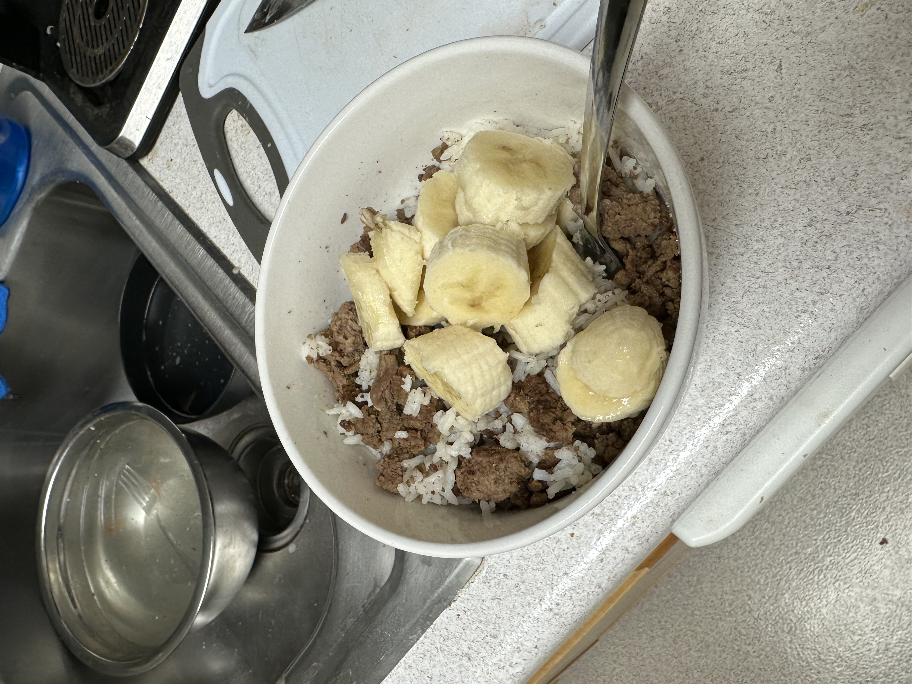

My Go-To Pre-Workout Meal

Description:
Since being briefly more mindful of my eating this year, I
came up with a few gems while experimenting in the kitchen.
One of them was a pre workout meal that made me feel clean and fueled
after consumption. That meal was quinoa, beef, banana, and honey,
but quinoa is kind of annoying to make so now I just do it with rice.
The real key here is the banana. Don't sleep on the banana.
People judge me for this (not that I care, I'm not making it for them),
but before you let your reflex reaction stop you from trying it, I found
out apparently somali and filipino people be doing this, so if it can be
normalized in their cultures there might be something to it, huh?
This meal works well as a general purpose filler meal, because it's
pretty clean and you can build it out however you want on top of
lean ground beef and white rice that you can already have prepped in
the fridge. Today though, I'll just be detailing how I might lay it
out for a pre-workout meal.
Ingredients
- 90g (dry weight) white rice (often about 200g cooked)
- 6oz (wet weight) 93% lean ground beef (often around 95-100g cooked)
- water from the sink (if rice is dry)
- A banana
- Salt
- 5-10g Honey
- Optional: spinach, blueberries, hot sauce
Steps:
- First get a microwave-safe bowl and put it on your food scale
- Weigh out your beef and rice
- Adding a splash of water to the bowl before microwaving it can help
soften up your rice, so do so if you feel it may behoove your dish.
- Microwave on high for around 90 seconds
- Salt to taste
- Get your bowl back on the scale and add your mixables.
This is your honey, which you want to weigh out, and hot sauce if
you wish. I use sriracha sometimes.
- Mix your honey and whatever else in well.
-
Slice up your banana on the top while weighing how much you used.
My bananas typically end up being 100-160g, most commonly around
120g.
- Mix the banana up in there, and also add any other plants you want.
This could be spinach or a berry. If you want to use this as your last
meal before training, the key here is to only add an amount of any ingredient
that you think would agree with your stomach. You would not
want to add like a tomato in here or some shit because it would be bloating.
- Mix and serve
Back